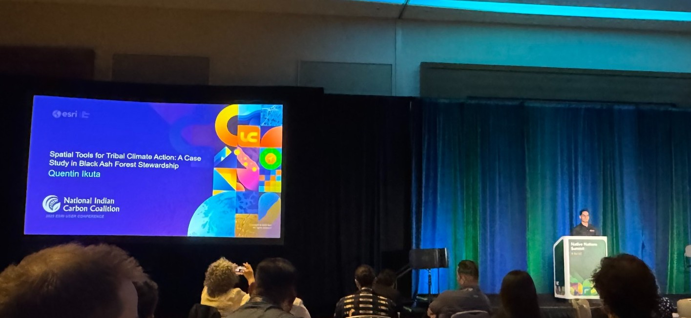
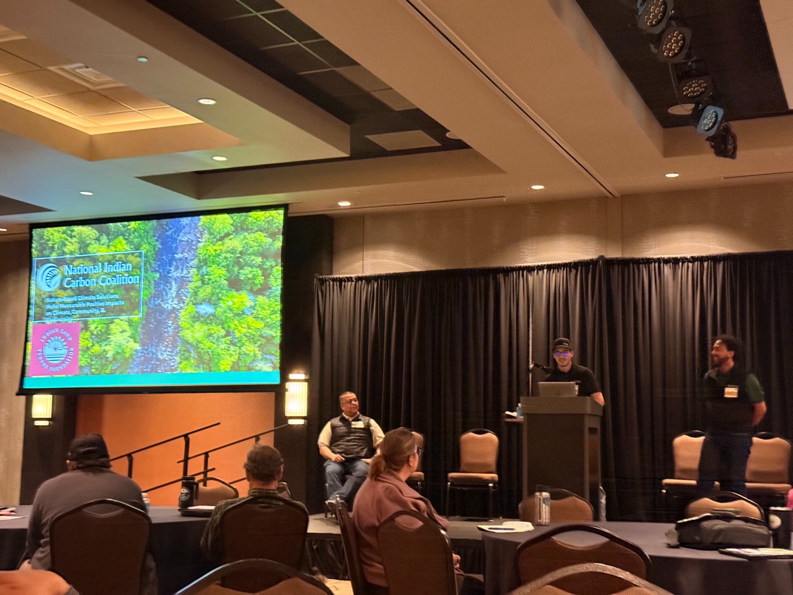
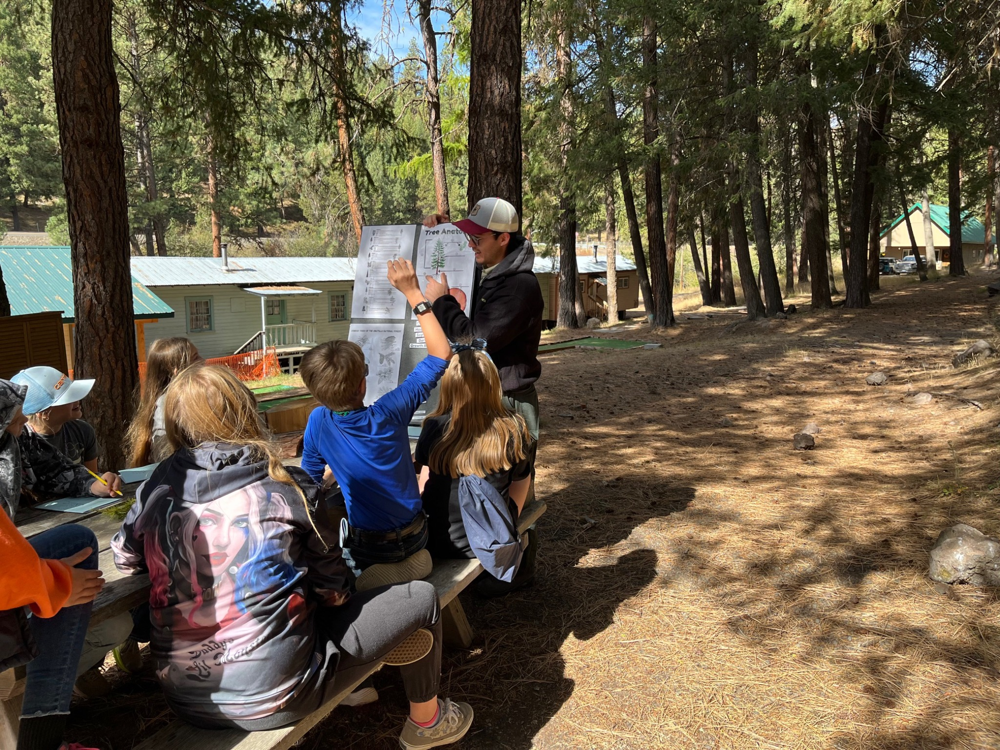

Speaking
Conference Speaking, Workshops, and Tribal Engagement.
This page is dedicated entirely to my speaking and engagement record, with filters to quickly navigate between conferences, trainings, Tribal work, partnerships, research, and youth development.


